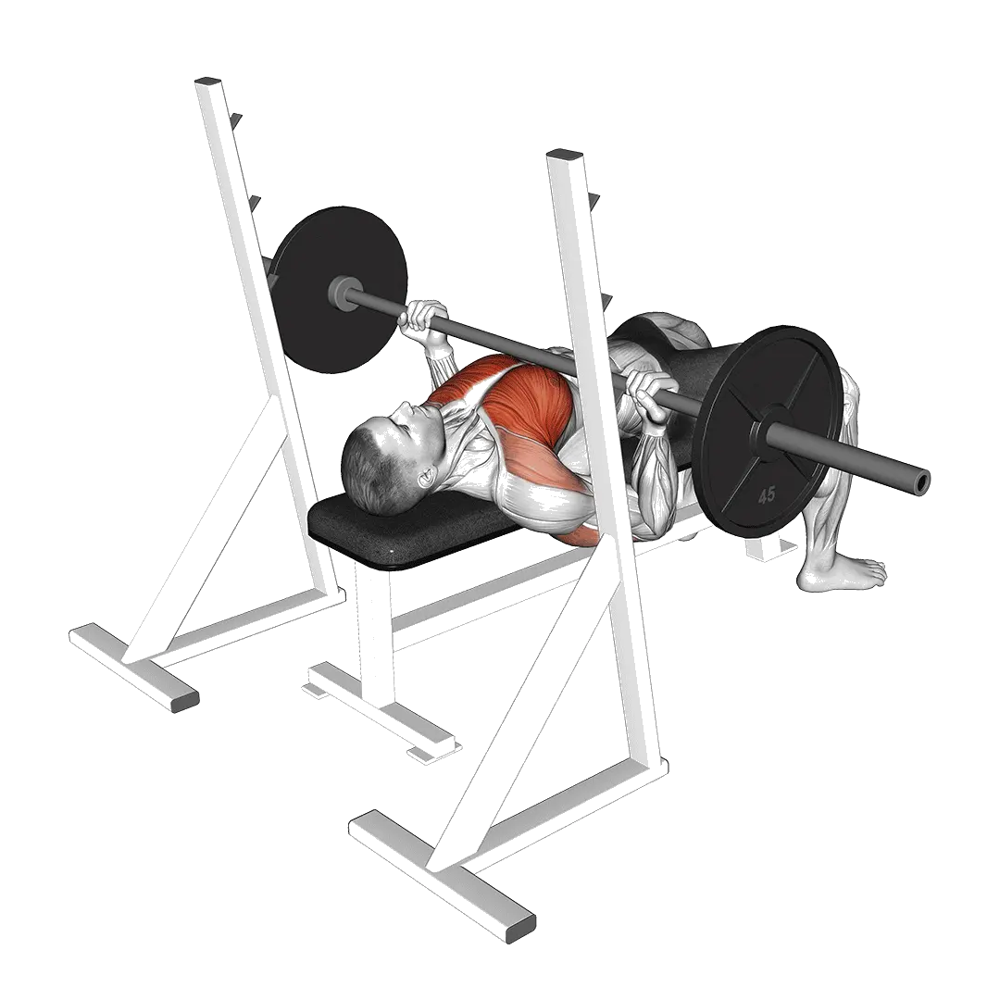

Reverse-grip bench press
Reverse-grip bench press menampilkan berat rata-rata dan standar kekuatan sebagai referensi untuk kategori dada. Otot utama: Pectoralis major, Triseps brachii, Biseps brachii.

Berat rata-rata: Menengah
Acuan untuk level menengah.
Pria
218 lb
Wanita
85 lb
Berat rata-rata Reverse-grip bench press [1RM]
| Level | ||
|---|---|---|
| Dasar | 74 lb | 28 lb |
| Pemula | 135 lb | 52 lb |
| Menengah | 218 lb | 85 lb |
| Mahir | 322 lb | 126 lb |
| Pro | 439 lb | 172 lb |
Catatan: standar ini adalah estimasi 1RM berdasarkan lifter rata-rata. Berat badan, usia, dan faktor pribadi lain dapat memengaruhi hasil. Lihat data detail pada tabel di bawah.
Standar kekuatan Reverse-grip bench press (lb)
Pria berdasarkan berat badan (lb) [1RM]
| Berat badan | Dasar | Pemula | Menengah | Mahir | Pro |
|---|---|---|---|---|---|
| 110 | 28 | 65 | 119 | 190 | 273 |
| 120 | 36 | 76 | 135 | 209 | 296 |
| 130 | 44 | 88 | 149 | 228 | 318 |
| 140 | 52 | 99 | 164 | 245 | 338 |
| 150 | 60 | 110 | 178 | 262 | 358 |
| 160 | 68 | 120 | 191 | 279 | 378 |
| 170 | 76 | 131 | 205 | 295 | 396 |
| 180 | 84 | 141 | 217 | 310 | 414 |
| 190 | 91 | 151 | 230 | 325 | 431 |
| 200 | 99 | 161 | 242 | 340 | 448 |
| 210 | 107 | 171 | 254 | 354 | 464 |
| 220 | 114 | 180 | 266 | 367 | 480 |
| 230 | 122 | 190 | 277 | 381 | 495 |
| 240 | 129 | 199 | 288 | 394 | 510 |
| 250 | 137 | 208 | 299 | 406 | 524 |
| 260 | 144 | 217 | 310 | 419 | 538 |
| 270 | 151 | 226 | 320 | 431 | 552 |
| 280 | 158 | 234 | 330 | 442 | 565 |
| 290 | 165 | 243 | 340 | 454 | 578 |
| 300 | 172 | 251 | 350 | 465 | 591 |
| 310 | 178 | 259 | 359 | 476 | 603 |
Pria berdasarkan usia [1RM]
| Usia | Dasar | Pemula | Menengah | Mahir | Pro |
|---|---|---|---|---|---|
| 15 | 63 | 115 | 186 | 274 | 374 |
| 20 | 72 | 131 | 213 | 313 | 428 |
| 25 | 74 | 135 | 218 | 322 | 439 |
| 30 | 74 | 135 | 218 | 322 | 439 |
| 35 | 74 | 135 | 218 | 322 | 439 |
| 40 | 74 | 135 | 218 | 322 | 439 |
| 45 | 70 | 128 | 207 | 305 | 416 |
| 50 | 66 | 120 | 194 | 286 | 391 |
| 55 | 61 | 111 | 180 | 265 | 361 |
| 60 | 55 | 101 | 164 | 242 | 330 |
| 65 | 50 | 92 | 148 | 218 | 298 |
| 70 | 45 | 82 | 133 | 196 | 267 |
| 75 | 40 | 73 | 119 | 175 | 239 |
| 80 | 36 | 66 | 106 | 157 | 214 |
| 85 | 32 | 59 | 95 | 140 | 192 |
| 90 | 29 | 53 | 86 | 127 | 173 |
Wanita berdasarkan berat badan (lb) [1RM]
| Berat badan | Dasar | Pemula | Menengah | Mahir | Pro |
|---|---|---|---|---|---|
| 90 | 14 | 31 | 55 | 87 | 124 |
| 100 | 17 | 35 | 61 | 94 | 132 |
| 110 | 20 | 40 | 67 | 101 | 141 |
| 120 | 23 | 44 | 72 | 108 | 148 |
| 130 | 26 | 48 | 77 | 114 | 156 |
| 140 | 29 | 52 | 82 | 120 | 162 |
| 150 | 32 | 55 | 87 | 126 | 169 |
| 160 | 35 | 59 | 91 | 131 | 175 |
| 170 | 37 | 62 | 96 | 136 | 181 |
| 180 | 40 | 66 | 100 | 141 | 187 |
| 190 | 42 | 69 | 104 | 146 | 192 |
| 200 | 45 | 72 | 108 | 150 | 198 |
| 210 | 47 | 75 | 112 | 155 | 203 |
| 220 | 50 | 78 | 115 | 159 | 208 |
| 230 | 52 | 81 | 119 | 163 | 213 |
| 240 | 54 | 84 | 122 | 167 | 217 |
| 250 | 57 | 87 | 126 | 171 | 222 |
| 260 | 59 | 90 | 129 | 175 | 226 |
Wanita berdasarkan usia [1RM]
| Usia | Dasar | Pemula | Menengah | Mahir | Pro |
|---|---|---|---|---|---|
| 15 | 24 | 44 | 72 | 107 | 146 |
| 20 | 28 | 51 | 83 | 122 | 167 |
| 25 | 28 | 52 | 85 | 126 | 172 |
| 30 | 28 | 52 | 85 | 126 | 172 |
| 35 | 28 | 52 | 85 | 126 | 172 |
| 40 | 28 | 52 | 85 | 126 | 172 |
| 45 | 27 | 50 | 81 | 119 | 163 |
| 50 | 25 | 46 | 76 | 112 | 153 |
| 55 | 23 | 43 | 70 | 103 | 141 |
| 60 | 21 | 39 | 64 | 94 | 129 |
| 65 | 19 | 35 | 58 | 85 | 117 |
| 70 | 17 | 32 | 52 | 77 | 105 |
| 75 | 15 | 28 | 46 | 68 | 94 |
| 80 | 14 | 25 | 41 | 61 | 84 |
| 85 | 12 | 23 | 37 | 55 | 75 |
| 90 | 11 | 21 | 33 | 49 | 68 |
Catatan: barbell standar di gym umumnya berbobot 44 lb.
Catat dan analisis di aplikasi Shiba
Lihat beban, repetisi, dan perkembangan di satu tempat.
Cara membaca tabel
| Level | Deskripsi | Distribusi |
|---|---|---|
| Dasar | Menguasai teknik yang benar dan berlatih konsisten minimal 1 bulan. | Bawah 5% |
| Pemula | Berlatih konsisten minimal 6 bulan. | Atas 80% |
| Menengah | Berlatih konsisten lebih dari 2 tahun. | Atas 50% |
| Mahir | Berlatih terencana lebih dari 5 tahun. | Atas 20% |
| Pro | Menekuni latihan ini secara khusus lebih dari 5 tahun. | Atas 5% |
Latihan lainnya
Dada
Diamond push-up
Dada / Bodyweight
Close-grip dumbbell bench press
Dada / Dumbbell
Bench pin press
Dada
Wide-grip bench press
Dada
Decline push-up
Dada / Bodyweight
Close-grip incline bench press
Dada
Incline push-up
Dada / Bodyweight
Close-grip push-up
Dada / Bodyweight
Archer push-up
Dada / Bodyweight
Spoto press
Dada
Bench press
Dada / BIG3
Dumbbell bench press
Dada / Dumbbell